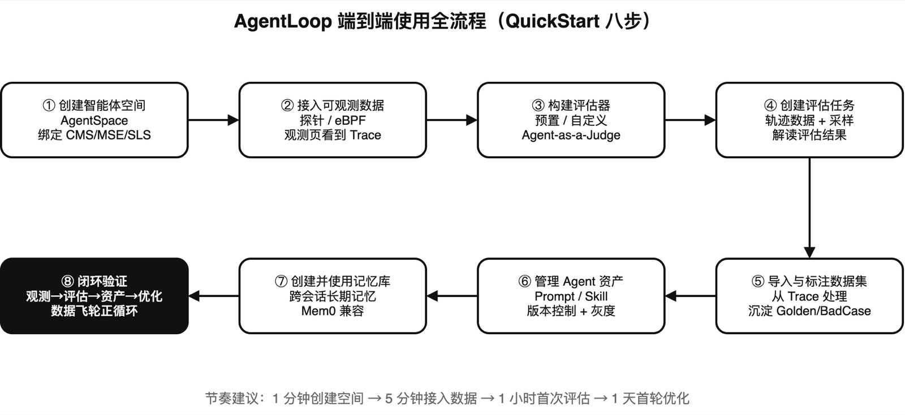
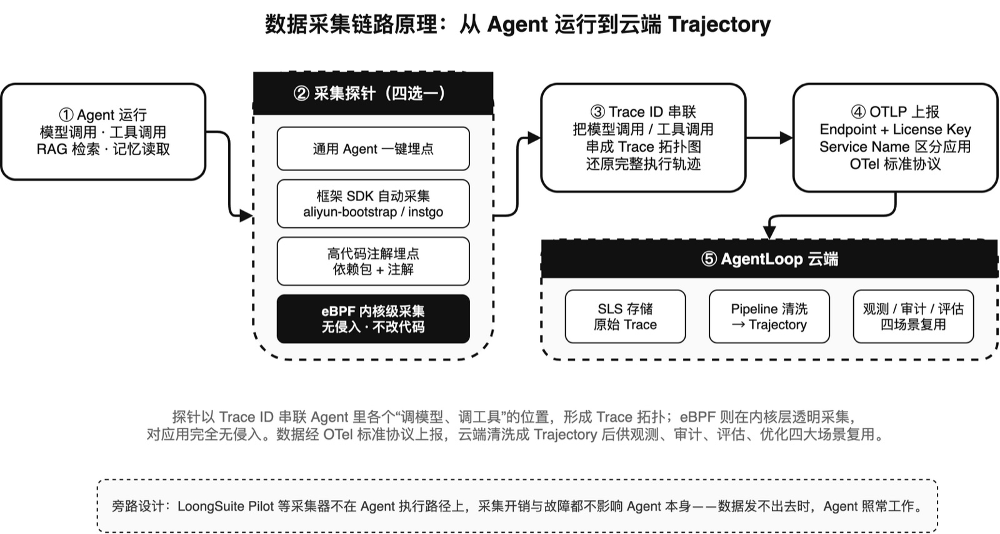
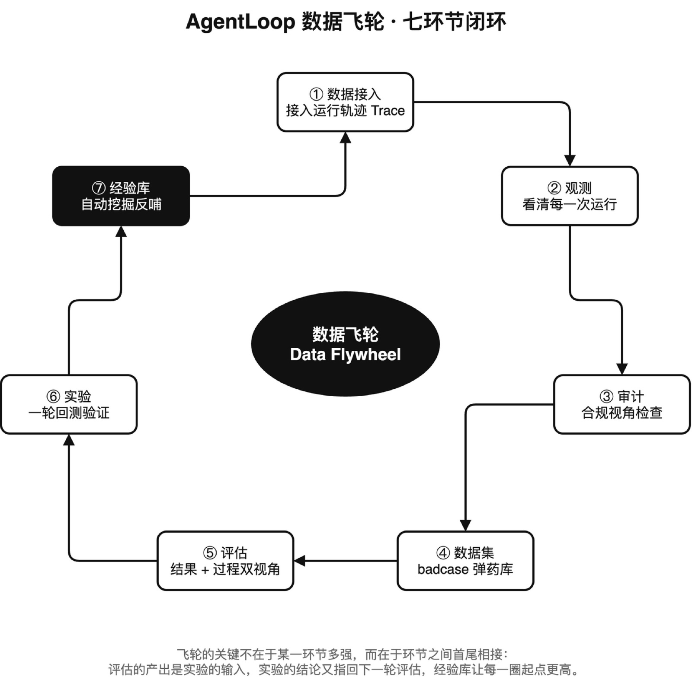
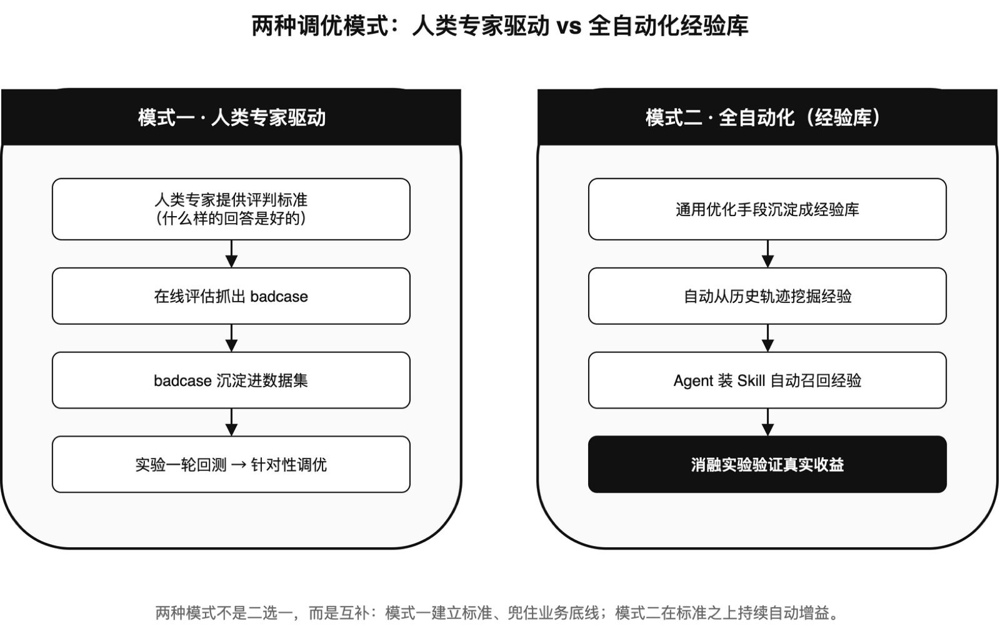
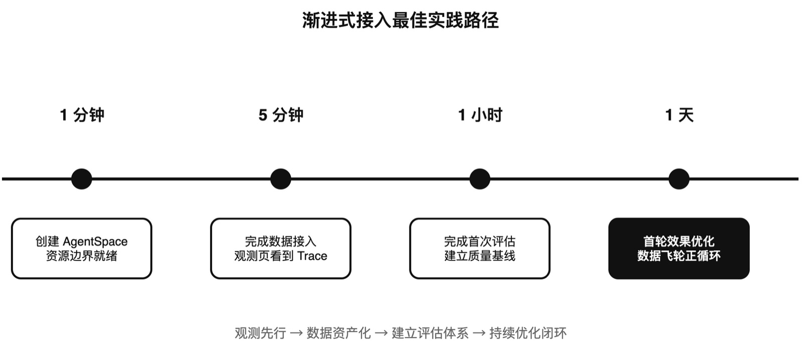
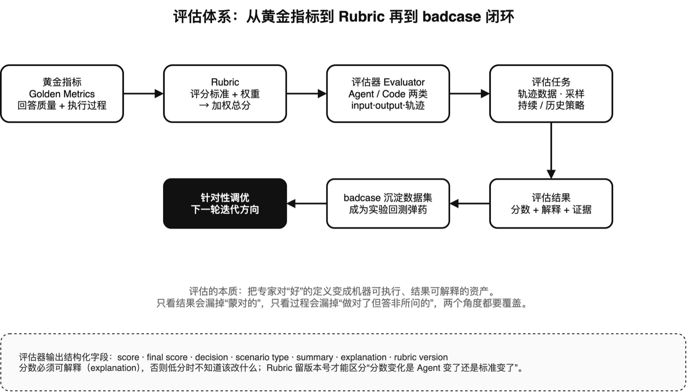
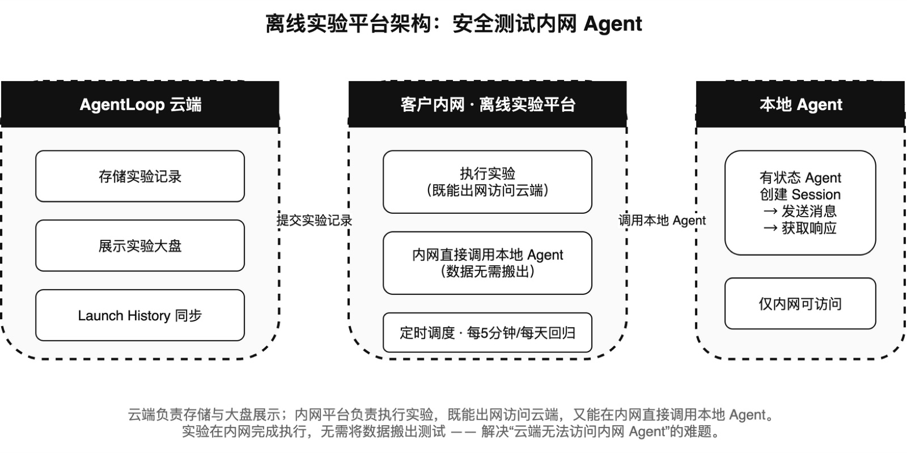

AgentLoop 是阿里云推出的面向企业级智能体的一站式自进化平台。它把 Agent 在生产环境中的每一次执行，都变成一份可观测、可评估、可优化的资产，让 Agent 越用越聪明——更好、更快、更省、更安全。
不同于传统 LLMOps 工具只面向单次模型调用提供 LLM-as-a-Judge、LLM Playground 等单点功能，AgentLoop 面向真实生产环境的 Agent 应用，提供 Agent-as-a-Judge、Agent Playground、Trace2Dataset 等场景化闭环能力，让 Agent 在生产环境中形成"可观测 → 可评估 → 可优化"的持续进化飞轮。
📖 官方文档：什么是 AgentLoop · 产品主页 · 核心概念
Agent 级评估拦截退化，Bad Case 定向修复。
Trace 全链路还原推理路径，故障定位从 2 小时压缩到分钟级。
Token 消耗精细归因到 Agent / 工具 / Prompt，支撑 FinOps 治理。
每一步工具调用留痕，异常行为分钟级预警，满足强合规审计。
当企业从 LLM 应用迈入 Agent 应用阶段，传统 APM 与 LLMOps 工具集体失灵。Agent 的多步推理、工具调用、多模型协作带来四大核心挑战：
Agent 多步推理输出质量下降，故障定位平均超 2 小时，只能被动等待工单和客诉暴露问题。
Token 异常消耗可达平峰期的 10 倍以上，缺乏精细归因手段，无法实施 FinOps 治理。
Prompt、Skill、模型变更缺乏自动化质量门禁，大部分变更故障本可拦截却被放过至线上。
Agent 多步执行轨迹缺乏审计与回放能力，难以满足强合规需求行业的留痕要求。
AgentLoop 的一切能力围绕一个核心机制展开——数据飞轮（Data Flywheel）。原始运行数据一次采集，四大场景复用，价值随时间持续增长。
AgentLoop 提供 7 大核心功能模块，构成完整的 Agent 生命周期管理闭环。
阿里云自研探针 + 开源探针 + 云产品深度集成，端到端无侵入采集链路、指标、日志。基于 UModel 自动发现 Agent → Tool → Model 拓扑，构建 Agent Ontology 全栈视图，结合 STAROps 智能诊断引擎定位性能瓶颈与 Token 消耗热点。
为每一步工具调用与决策分支构建不可篡改的执行轨迹证据链。内置异常行为检测引擎，实时识别越权操作、数据外发等风险模式，分钟级完成异常风险预警。
评估器本身就是具备复杂任务规划、工具使用、多步推理能力的 Agent，基于 Trajectory 深度评估——可回放轨迹、调用验证工具复核结果、对比历史基准，接近人类专家水平。支持预置评估器（幻觉、正确性、任务完成度）与自定义评估器。
Playground 在线实验对比，支持 Agent 与 LLM 两种类型实验。多组变量批量运行（Agent 实例、模型版本、Prompt 版本、参数、工具），提供统计显著性分析，用数据驱动变更决策。预计 2026-06-30 前正式上线。
Pipeline 引擎自动化编排：数据源接入 → 数据降维（过滤/去重/采样）→ 特征提取 → AI 加工 → 写入目标数据集。把线上 Trace 持续加工为 Golden / BadCase / 后训练数据集，节省 90%+ 人工数据处理成本。
记忆库四种策略：事实（Facts）、情节（Episodic）、摘要（Summary）、自定义（Custom），兼容 Mem0 API。经验库（内测中）从轨迹中自动挖掘可复用操作知识，支持组织级共享，让单个 Agent 的成功经验跨应用复用。
Prompt 与 Skill 集中托管、版本控制、变更审计。像管理代码一样管理 Agent 行为：变更可回溯、效果可对比度量、上线节奏可控，支持灰度发布与多人协同编辑。
顶层工作空间，一个 AgentSpace 对应一个团队/业务线/独立项目的完整资源边界，绑定 CMS 2.0 工作空间、MSE 命名空间、SLS Project。默认单账号上限 50 个，实现多租户治理与权限隔离。
| 优势 | 对比传统方案 |
|---|---|
| Agent 级观测 | 传统 LLMOps 观测粒度止于单次模型调用；AgentLoop 以完整执行轨迹为对象，自动解析 Agent→Tool→Model 拓扑，支持业务视角与技术视角双维度分析。 |
| Agent-as-a-Judge | LLM-as-a-Judge 仅通过 Prompt 模板单轮判断；Agent-as-a-Judge 评估器本身是 Agent，可回放轨迹、调用验证工具、对比历史基准。 |
| Trace2Dataset 飞轮 | 原始日志被动堆积；Pipeline 自动过滤/去重/采样/聚类，持续加工为高质量数据集，实现"数据越跑越多、质量越用越高"。 |
| 零侵入接入 | 阿里云自研探针无需改造业务代码；同时兼容 OpenTelemetry 标准协议，覆盖主流 Agent 框架与自研系统。 |
| 企业级安全合规 | 行为留痕的审计能力 + 异常行为检测引擎，满足强合规行业对 Agent 系统运行过程的数据面审计/回溯要求。 |
| 上下文工程闭环 | 记忆库 + 经验库让 Agent 跨会话理解背景、从历史执行中学习最佳实践，无需重新训练模型即可"越用越聪明"。 |
AgentLoop 提供三条互补的接入路径，覆盖从"通用 Linux 运行时"到"具体 Agent 框架"再到"AI Coding Agent 端侧"的完整谱系。三者非互斥、可组合。
Linux 内核层采集模型交互、进程、文件、网络行为。无需修改代码、无需重启业务，覆盖最广。可观测链路暂未开放。
开发者本机轻量采集器，专注 AI Coding Agent（Claude Code、Codex、Cursor、Qoder 系列）。自动升级、无需重启。
Python aliyun-bootstrap、Java AliyunJavaAgent、Go instgo、Node.js SDK 及 OpenTelemetry 各语言 SDK。提供原生框架上下文。
| 能力 / 环境 | eBPF | LoongSuite Pilot | 语言与框架探针 |
|---|---|---|---|
| 可观测产品 | ✕ | ✓ | ✓ |
| 审计产品 | ✓ | ✓ | ✕ |
| 评估产品 | ✓ | ✓ | ✓ |
| 常见 Agent 框架 | ✓ 广覆盖 | ✕ | ✓ 主流 |
| Python / Node.js 自研 | ✓ | ✕ | ✓ |
| Rust 自研 | ✕ | ✕ | ✕ |
| 运行环境 | Linux / Docker / K8s | Linux / macOS / Windows 开发环境 | Linux / macOS / Windows 主机与容器 |
| 升级影响 | 手动升级采集器 无需重启业务 | 自动升级 无需重启业务 | 主机手动 / 容器自动 需重启应用 |
对于 Dify、OpenClaw、Hermes、AgentScope、AI Coding Agent 等"非通用"框架，AgentLoop 不走一刀切方案，而是针对每种框架的运行时特性提供专用接入路径。核心思路是：顺着框架自身的插件/Hook 生态植入采集器，尽量不改业务代码。
面向 Claude Code、Codex、Cursor、Qoder 系列等开发者本机运行的 Coding Agent。LoongSuite Pilot 是本机轻量采集器，自动发现已安装 Agent 并部署对应 Hook 或插件。
| Agent | 集成方式 | Trace | 日志 | Token | 对话/Tool |
|---|---|---|---|---|---|
| Claude Code | Hook | ✓ | ✓ | ✓ | ✓ |
| Codex | Hook | ✓ | ✓ | ✓ | ✓ |
| Cursor / Cursor CLI | Hook | ✓ | ✓ | ✓ | ✓ |
| Qoder / Qoder CN / Qoder Work | Hook / 本地数据轮询 | ✓ | ✓ | ✓ | ✓ |
| OpenClaw | 插件注入 | ✓ | ✓ | ✓ | ✓ |
| Hermes Agent | 原生目录插件 | ✓ | ✓ | ✓ | ✓ |
| Qwen Code CLI / Qwen Work CN | Hook | ✓ | ✓ | ✓ | ✓ |
| DeepSeek Harness / Grok Build / MiMo Code / OpenCode / Pi / Kiro CLI / Wukong / WorkBuddy | Hook / 插件注入 / CLI API 轮询 / 会话轮询 | ✓ | ✓ | 视 Agent | ✓ |
curl -fsSL https://aliyun-observability-release-cn-shanghai.oss-cn-shanghai.aliyuncs.com/loongsuite-pilot/installer.sh \
-o /tmp/loongsuite-pilot-installer.sh \
&& bash /tmp/loongsuite-pilot-installer.sh install \
--collect-log "true" \
--collect-trace "true" \
--sls-project "<SLS Project>" \
--sls-logstore "<SLS Logstore>" \
--sls-endpoint "<SLS Endpoint>" \
--cms-license-key "<Trace License Key>" \
--cms-endpoint "<Trace Endpoint>" \
--cms-workspace "<Trace Workspace>" \
--service-name-prefix "<服务名前缀>"安装器会自动完成：检测本机支持的 AI Coding Agent → 让你选择需要采集的 Agent → 部署对应 Hook 或插件 → 写入本地配置 → 启动后台服务。本地数据默认写入 ~/.loongsuite-pilot/logs/output/*.jsonl。
LoongSuite Pilot 在事件发送到后端前，可对 Prompt、Completion、工具参数中的敏感数据脱敏。9 种内置规则覆盖 AccessKey、API Key、私钥、数据库 URL、身份证、手机号、邮箱、IPv4、银行卡。默认关闭，配置 ~/.loongsuite-pilot/config.json 后 loongsuite-pilot restart 生效。
OpenClaw 通过 opentelemetry-instrumentation-openclaw（负责 Trace，遵循 OTel GenAI 语义规范）+ diagnostics-otel（负责 Metrics，采集 Token 速率、QPS、队列深度）两个插件协同上报。
http/protobuf，不支持 http/json 与 gRPCcurl -fsSL https://arms-apm-cn-hangzhou-pre.oss-cn-hangzhou.aliyuncs.com/opentelemetry-instrumentation-openclaw/install.sh \
| bash -s -- \
--endpoint "https://你的Endpoint" \
--x-arms-license-key "你的LicenseKey" \
--x-arms-project "你的Project" \
--x-cms-workspace "你的Workspace" \
--serviceName "你的服务名"脚本会自动：检查环境 → 下载解压插件 → 安装依赖 → 定位 diagnostics-otel → 更新 openclaw.json（两插件配置一次写完）→ 重启网关。
hooks.allowConversationAccess: true 仅 OpenClaw ≥ 2026.4.25 支持。低于此版本必须删除 hooks 段，否则网关启动报 "Unrecognized key" 错误。Hermes Agent 官方镜像不含 pip3，无法走 ack-onepilot 自动注入，因此提供三种方案覆盖不同部署形态：
在 Dockerfile 中 uv pip install 探针 wheel 到 Hermes 内置虚拟环境，通过 PYTHONPATH 让 Python 进程启动时自动加载。适合 ACK/ACS/K8s 生产。
探针安装到独立目录 ~/.aliyun-python-agent/hermes，写入 sitecustomize.py，通过 PYTHONPATH 注入。无需修改 Hermes 源码，可用于 hermes gateway start 长期运行。
官方 bash 脚本安装 loongsuite-site-bootstrap + Hermes 可观测插件，注册 hermes-cms 命令，hermes-cms enable 启用。适合本地开发、PoC、问题复现。
启动日志中出现 Aliyun python agent is started 即代表探针加载成功。
Dify 由四个组件构成，AgentLoop 对每个组件采用不同的接入策略：
| 组件 | 接入方式 | 关键要点 |
|---|---|---|
| dify-api 执行引擎 API |
K8s ack-onepilot 自动注入 或修改 entrypoint.sh |
需先卸载冲突的 OTel 插件（celery/flask/redis/requests/logging/wsgi/fastapi/asgi/sqlalchemy），再 pip install aliyun-bootstrap；启动改用 aliyun-instrument gunicorn ...；必须设 GEVENT_ENABLE=true。 |
| workflow 应用 LLM 应用 |
视 dify-api 版本而定 | 1.6.0 < ver < 1.11.2：单独配置；≤1.6.0 或 ≥1.11.2：接入 dify-api 后自动关联；≥1.13.0：在 dify-worker 配置 OTel Exporter。 |
| dify-plugin-daemon 插件引擎 |
Go 探针 instgo 重新编译镜像 |
Dockerfile 中 INSTGO_EXTRA_RULES="dify_python" ./instgo go build，自动拉起插件运行时探针；每个插件生成独立应用名 {daemon}_plugin_{name}_{version}。 |
| sandbox 代码沙箱（可选） |
Go 探针 instgo | 编译 python.so / nodejs.so 时注入 instgo，监控 Workflow 中 Python/Node.js 代码执行。 |
| nginx 入口网关（可选） |
OpenTelemetry Nginx 模块 | 超时、文件上传问题排查。 |
ack-dify 组件使用 Dify 时，直接在 Helm 更新页面把 arms.enabled 设为 true、appName 设为 "dify"、applicationType 设为 "Dify"，即可完成接入。基于 OpenTelemetry 标准的 Python 探针 aliyun-bootstrap，业务代码零改造。
# 1. 安装探针
pip3 install aliyun-bootstrap
aliyun-bootstrap -a install
# 2. 环境变量
export ARMS_APP_NAME=my-agent-app
export ARMS_REGION_ID=cn-hangzhou
export ARMS_LICENSE_KEY=<从接入中心获取>
# 3. 启动应用
aliyun-instrument python app.py自动监控覆盖：Chain/Agent 执行链路、LLM 调用（模型/Token/输入输出）、Tool 调用、Retriever/RAG 链路、LangGraph 图节点执行与状态流转。
流式场景要点：使用 ChatOpenAI(streaming=True) 时必须开启 stream_usage=True 才能采集 Token；调用 agent.invoke 时通过 config.metadata 传入 session_id 与 user_id，用于会话/用户维度分析。
当目标 Agent 未被上述专用方案覆盖（例如自研 Agent、Rust Agent、其他语言），eBPF 提供 Linux 内核层的通用采集能力，无需修改代码、无需重启业务。以下是完整的接入操作流程。
📖 官方文档：接入 AI 系统运行时日志（eBPF） · 选择 AI Agent 接入方式
| 参数 | 说明 | 操作 |
|---|---|---|
| Project | 当前智能体空间绑定的 SLS Project | 只读，自动填充 |
| Logstore | 运行时日志写入的 Logstore，固定为 ebpf-event |
只读，自动填充 |
| 机器组 | 需要采集的目标机器组 | 选择已有机器组或创建新机器组 |
未修改配置时使用推荐的默认规则；修改任一规则后，以当前配置覆盖对应的默认规则。
采集器通常可自动识别 AI Agent 并纳入采集；若目标进程未被识别，可通过白名单补充规则。每条规则包含 Agent 类型 + 命令行参数模式；命中规则的进程被标记为对应 Agent 类型。
排除不需要采集的进程模式，优先级高于白名单。适用于过滤掉测试进程、监控 agent 本身等不需要采集的进程。
决定哪些网络活动进入候选采集范围。默认规则包括百炼、OpenAI、Anthropic 等常见模型服务域名；使用其他模型服务商或自定义 AI 网关时可补充对应域名。
开启后，无法解析为 LLM 语义的流量（未知 API path、非标准 body）不再被丢弃，而是以原始 HTTP 形式上报。需 LoongCollector 3.3.10+。
运行时日志可能包含手机号、邮箱、API Key 等敏感信息。可在接入配置中按需开启端侧数据脱敏，覆盖以下类型：
默认关闭；启用后脱敏数据仍保留必要上下文，可用于审计和问题排查。
根据页面提示，在目标环境中安装或更新 LoongCollector 和采集配置。控制台会根据所选场景（Linux 主机 / Docker / Kubernetes DaemonSet）动态生成安装命令。
curl -fsSL <OSS下载地址> | bash -s -- install --project <Project> --logstore ebpf-event --machine-group <机器组>ebpf-event Logstore 是否已写入目标主机或容器的最新数据| 问题 | 排查步骤 |
|---|---|
| Logstore 中没有数据 |
|
| 目标 Agent 未被识别 |
|
| 采集到了不需要的进程 | 在命令行黑名单中增加需排除的进程模式（黑名单优先） |
| 只能看到网络活动，无法看到完整模型交互 |
|
alibabacloud-agentloop-management Skill 把接入流程封装为 AI Agent 可执行的结构化工作流。安装到 QoderWork / Cursor / Claude Code 后，用一句自然语言即可完成全流程接入：
# 自然语言示例
"帮我把 ACK 集群里的 LangChain 应用 customer-support-agent
接入 AgentLoop 监控，Workspace 是 agentloop-2694ecf8****1f84542d"Skill 底层使用 AgentLoop CLI 与标准探针方案（ack-onepilot、AliyunJavaAgent、aliyun-bootstrap、instgo、OpenTelemetry）。核心机制是两阶段确认：Phase A 展示目标资源/命令/影响范围/回滚方式，Phase B 仅在用户明确批准后执行。
| 接入对象 | 推荐路径 | 典型部署 |
|---|---|---|
| AI Coding Agent（Claude Code / Codex / Cursor / Qoder） | LoongSuite Pilot | 开发者本机 Linux / macOS / Windows |
| Agent 平台（OpenClaw / Hermes / QwenPaw / Coze） | 专用插件 + 语言探针 | K8s / ECS / 本机 |
| Agent 框架（AgentScope / LangChain / LangGraph / Dify） | aliyun-bootstrap / instgo / ack-onepilot | K8s / ECS / Docker |
| Python / Node.js 自研 Agent | 语言探针 或 eBPF | Linux 主机 / 容器 |
| 其他语言自研 / Rust Agent | eBPF（Codex 例外，载荷受限） | Linux 主机 / 容器 |
| AI 系统运行时（通用兜底） | eBPF | Linux / Docker / K8s |
本章把 AgentLoop 从开通到优化的完整使用过程串成一条可照做的操作路径，并拆解数据是如何被采集上来的。配合两张流程图，帮助客户快速建立全景认知。
官方推荐的渐进式上手路径：1 分钟创建 AgentSpace，5 分钟完成数据接入，1 小时完成首次评估，1 天实现首轮效果优化。整个流程分为八个步骤，前四步建立"观测 + 评估"基线，后四步完成"数据资产化 + 持续优化"闭环。

| 步骤 | 操作 | 关键要点 |
|---|---|---|
| ① 创建智能体空间 | 控制台首页 → 新建空间 | 选择地域（创建后不可换）；自动创建并绑定 CMS 2.0 工作空间、MSE 命名空间、SLS Project |
| ② 接入可观测数据 | 接入中心选择接入方式 | 探针自动采集 LLM 调用、工具调用、Retriever、节点链路；观测页查看 Trace 数 / 耗时 / Token |
| ③ 构建评估器 | 评估 → 评估器 | 预置评估器开箱即用；自定义评估器编写 Prompt + 挂载 Skills/MCP，实现 Agent-as-a-Judge |
| ④ 创建评估任务 | 评估 → 评估任务 | 数据源选链路/日志/数据集；运行策略持续或历史；配置采样比例与字段映射 |
| ⑤ 导入与标注数据集 | 数据中心 → 数据集 | 从 Trace 数据处理（如 ot_trace_qa_extract）；人工标注沉淀 Golden / BadCase Set |
| ⑥ 管理 Agent 资产 | Agent 资产 → Prompts / Skills | 用 {{input}} 占位符声明变量；版本自动递增；支持版本对比与灰度发布 |
| ⑦ 创建并使用记忆库 | 上下文工程 → 记忆库 | 创建 API Key；Mem0 客户端写入/检索；控制台长期/短期记忆检索 |
| ⑧ 闭环验证 | 跑通端到端闭环 | 触发流量 → 评估抓 Bad Case → 加入数据集标注 → 迭代 Prompt → 重跑评估对比 → 沉淀记忆库 |
数据接入是数据飞轮的起点——没有高质量的运行数据，观测、评估、实验都无从谈起。AgentLoop 的数据采集构建在 OTel（OpenTelemetry）标准协议之上，以探针形式工作，整个链路分为五个阶段。

| 阶段 | 做什么 |
|---|---|
| ① Agent 运行 | Agent 执行过程中产生模型调用、工具调用、RAG 检索、记忆读取等行为 |
| ② 采集探针 | 四种探针之一拦截并采集数据（见下表），业务代码无需或极少改造 |
| ③ Trace ID 串联 | 探针把各个"调模型、调工具"的位置以 Trace ID 串联，形成 Trace 拓扑图，还原完整执行轨迹 |
| ④ OTLP 上报 | 通过 OTel 标准协议上报到云端，携带 Endpoint + License Key（鉴权）+ Service Name（区分应用） |
| ⑤ 云端处理 | SLS 存储原始 Trace → Pipeline 清洗成 Trajectory → 供观测/审计/评估/优化四场景复用 |
针对开箱即用的通用 Agent 做了专业化埋点，不需要任何开发工作，直接一键对接。
基于 AgentScope / LangChain 等框架时，SDK 在模型调用、工具调用等关键位置自动采集，埋点跟着框架走，开发者几乎无感。Python 用 aliyun-bootstrap，Go 用 instgo。
高代码自研（含 AI-coding）场景，引用依赖包后在需要埋点处用注解采集。埋点位置的控制权交还给开发者，借助 AI-coding 增加几行埋点代码成本极低。
完全不想改代码时的兜底方案——内核级监控，无需修改任何代码。观测 Agent 与模型网关的交互、执行工具过程中的指令，对应用完全透明，适合存量系统与闭源组件。
OTel 是可观测性领域的事实标准，意味着接入不锁定、数据可互通。选标准协议做底座，本质是保证"今天接进来的数据，未来任何基于 OTel 的生态都能消费"。
LoongSuite Pilot 等采集器是旁路进程，不在 Agent 执行路径上。采集的开销和故障都不会影响 Agent 本身——数据发不出去时，Agent 照常工作。
Service Name 是数据的"归属标识"，同一 AgentSpace 下区分不同应用；License Key 是数据的"通行证"，用于上报鉴权。没有 License Key 数据报不上来。AgentLoop 的价值在五个典型企业场景中体现得最为直接：
对每轮对话进行质量评估，自动识别答非所问、幻觉回答、信息遗漏等 Bad Case；高频问题沉淀为数据集用于定向优化；记忆库保持用户偏好连续性，经验库沉淀复杂问题的最佳应答模式。
对 Coding Agent 的完整执行轨迹进行观测与评估：任务规划合理性、工具调用准确性、代码产出正确性。上线前通过实验验证版本变更效果，线上通过持续评估拦截质量退化。
Prompt 调优、模型升级、Skill 新增前基于历史数据集进行 A/B 对比实验，量化准确性/延迟/成本差异；结合评估体系建立自动化质量门禁，确保只有通过回归测试的变更才能上线。
精确追踪每个 Agent、每个工具调用、每次模型推理的 Token 消耗与耗时；识别成本热点（工具频繁超时触发重试、Prompt 模板 Token 异常）；对比不同模型/配置的成本效率比。
为 Agent 执行过程提供完整证据链留痕，按时间/用户/Agent 应用维度审计回放；异常行为检测引擎实时预警越权操作与敏感数据访问，满足强监管合规要求。
记忆库让 Agent 跨会话理解用户背景与偏好；经验库让 Agent 从历史执行中学习最佳实践。两者结合，Agent 在每一轮交互中自动检索相关上下文注入运行时，实现"越用越聪明"。
本章基于阿里云官方《AgentLoop 数据飞轮实践》系列（5 篇实操演示）与《QuickStart 全流程实践》整理，覆盖从数据接入到经验库消融实验的完整方法论。所有图表均提供 .drawio 源文件，可二次编辑。
AgentLoop 的核心任务是帮助用户调优 Agent，覆盖从开发到上线之后的持续调优全过程。开发期靠测试集和直觉尚能应付，上线之后面对的是真实、发散、持续涌入的用户请求——需要的不是几次手工调优，而是一套能自动发现问题、沉淀资产、验证效果的机制。

| 环节 | 回答的问题 | 关键动作 |
|---|---|---|
| ① 数据接入 | 发生了什么 | 接入 Agent 运行轨迹（trace）数据，是一切的地基 |
| ② 观测 | 细节是什么 | 看清每一次运行：调了哪些模型、用了哪些工具、走了什么路径 |
| ③ 审计 | 是否合规安全 | 对运行轨迹做安全审计，覆盖合规视角检查 |
| ④ 数据集 | 弹药从哪来 | 观测与评估中发现的 badcase 沉淀到数据集，是飞轮的"弹药库" |
| ⑤ 评估 | 做得好不好 | 从结果和过程两个角度评估响应质量 |
| ⑥ 实验 | 改动有没有用 | 一轮一轮回测，每轮观测整体分数，分数低就针对性调优 |
| ⑦ 经验库 | 怎么自动变好 | 后台算法自动从轨迹挖掘经验反哺 Agent，唯一无需人类专家介入的环节 |
AgentLoop 把调优过程分成两种模式，对应不同阶段的诉求。两者不是二选一，而是互补：模式一建立标准、兜住业务底线，模式二在标准之上持续自动增益。

人类专家提供评判标准（什么样的回答是好的）→ 在线评估抓出 badcase → 沉淀进数据集 → 实验一轮回测 → 针对性调优。适合业务上线初期建立质量标准。价值不只是抓出 badcase，更是把专家头脑里"这个回答不行"的隐性判断，固化成可复用、可回测的显性标准（Rubric）。
把通用优化手段沉淀成经验库 → 自动从历史轨迹挖掘经验 → Agent 装一个 Skill 自动召回 → 消融实验验证收益。可自动化挖掘的是通用维度：工具调用执行情况、延时、准确率、执行路径等，不依赖具体业务。
官方推荐的渐进式路径，让团队以最小成本快速建立可观测性基线，再逐步深化。

AgentLoop 的数据接入构建在 OTel（OpenTelemetry）标准协议之上，以探针形式工作。探针把 Agent 里各个调模型、调工具的地方以 Trace ID 串联，形成 Trace 拓扑图。选 OTel 做底座，本质是保证"今天接进来的数据，未来任何基于 OTel 的生态都能消费"。
| 接入方式 | 适用 Agent 形态 | 改造成本 | 覆盖与特点 |
|---|---|---|---|
| 通用 Agent 一键对接 | 开箱即用的通用 Agent | 无需任何开发工作 | 专业化埋点，一键对接 |
| Agent 框架 SDK 集成 | 基于 AgentScope 等框架研发 | SDK 自动采集，几乎无感 | 埋点跟着框架走，覆盖模型调用与工具调用 |
| 自定义高代码注解埋点 | 高代码自研（含 AI-coding） | 引用依赖包 + 注解，成本极低 | 埋点位置由开发者控制，按需观测 |
| eBPF 无侵入 | 存量系统、闭源组件 | 无需修改任何代码 | 内核级监控，同时覆盖模型调用与 Agent 执行 |
Service Name（数据的"归属标识"，同一 AgentSpace 下区分不同应用）+ License Key（数据的"通行证"，用于上报鉴权）。四种方式不是互斥的选择题，而是按 Agent 形态和改造意愿选择成本最低的一条路。评估体系是数据飞轮的核心驱动力。AgentLoop 的回答是建立一套可量化、可解释、可复用的评估体系——把"好不好"变成一组带权重的分数，把"为什么不好"变成可追溯的证据。

评估的第一步不是写代码，而是回答：这个场景下，什么算"好"？以客服 Agent 为例，关注两类评估维度：
| 维度 | 含义 | 漏检风险 |
|---|---|---|
| 回答质量 | 最终答案对不对、好不好 | 只看过程会漏掉"做对了但答非所问的" |
| 执行过程 | 工具调用是否合理、路径是否绕远 | 只看结果会漏掉"蒙对的" |
制定黄金指标不一定要从零手写——可以让 AI 基于业务场景帮忙制定并拆解，输出一份含分档规则、权重、总分公式的 Rubric。
两条补充经验：① 对业务足够熟悉也可人工制定，AI 只是提效手段；② 特别关注某个指标（如"是否泄露用户隐私"）时，可把它提出来作为顶层评估器单独评估，不淹没在总分里。
评估器有两种类型，选择依据是指标能否用规则表达：
确定、便宜，但只能覆盖能用规则表达的指标（格式、长度、字段完整性之类）。
让专门的评估 Agent 像人一样阅读输入、输出和轨迹，能理解语义，覆盖"回答是否切题""流程是否合理"这类规则写不出来的指标。代价是消耗更大——这也是采样配置存在的原因。
评估器的三个输入变量：input（用户问了什么）、output（Agent 答了什么）、轨迹 trace.agent（Agent 怎么一步步得出答案）。输出定义为结构化 Schema：
| 配置点 | 说明 |
|---|---|
| 轨迹数据 | 选 Trajectory（智能体行为视角：user prompt、每一步调用、最终输出和内部思考），而非 Trace（基础设施视角）。评估回答质量和执行过程要用轨迹数据。 |
| 运行策略 | 持续评估（来一条评一条，适合线上盯盘）/ 历史评估（对某段时间数据做一次完整评估，适合复盘）。 |
| 采样配置 | 评估消耗较大。只关心 badcase 时配置采样（如最大样本数 100、采样比例 100%）大幅降低成本。先用采样跑通流程，需要全量盯盘时再放开。 |
| 字段映射 | 把平台数据字段接到评估器变量：trace.input→input、trace.output→output、轨迹数据→trace.agent。映射正确，评估器才能拿到正确输入。 |
结果页左边是每条数据的 Input/Output，右边是评估结论（平均分值 + 加权分数）。更有价值的是解释、summary、final score、decision 以及证据——看到的不是一个孤零零的 0.4 分，而是"哪一步做错了、依据是什么"，调优方向直接写在结果里。
改 Prompt、换模型、调参数，任何改动都可能产生"变好了"的错觉，但回归测试里的其他题目可能悄悄变差。答案是实验：用数据集里的题目反复回测，用分数验证改动效果。
Agent 往往部署在公司内网、仅内网可访问，云端平台无法直接访问，把数据搬出去测试又不现实。AgentLoop 提供离线实验平台，直接部署在客户内网，就近访问本地 Agent。

| 配置项 | 说明 |
|---|---|
| 绑定 AgentSpace | 配置要测试、管理哪个智能体空间的实验，以及对应地域（region） |
| Endpoint 与 VPC | 使用默认值即可；访问其他地域时修改为对应地域 Endpoint |
| AccessKey | 需具备 AgentLoop FullAccess（读写）权限。建议申请专用 AccessKey，权限专用、用途单一，便于排查 |
| 连接本地 Agent | 有状态 Agent 需"创建 Session → 获取 Session ID → 发送消息 → 获取响应"，在自定义调用代码中适配 |
单次实验验证改动效果，定时调度把回测变成日常（生产环境通常配置为每天回归）。每个实验计划自动创建实验大盘，提供整体分数、变化趋势与明细，支持按题目下钻。每天回测一次，分数变低立刻可见；调优完成后立即测试，改进也立刻可见。为消除单次评估浮动，可按时间窗口计算均值（如每 1 小时或每 5 分钟一个窗口）。
在线评估时用户问题非常发散，无法制定具体 Rubric，使用通用标准。但实验时 badcase 已抓取出来，已知具体问题——"如何做评估"和"有哪些功能"两道题的评估标准并不相同。如果用同一套 Rubric 评估两道题，优化时会失去方向。正确做法是把 Rubric 定义到题目级别，四步改造：
text 类型的 rubric 字段，把每道题的 Rubric 写入对应题目。rubric 变量，让评估器按传入的 Rubric 评估，输出合法 JSON（含 rubric_id、score、reason、item_scores）。改造后每道题按自己的标准被评估，实验分数才真正具有指导意义——哪道题得分低，就补齐哪道题对应的能力点。
经验库的核心机制：算法自动从 Agent 运行轨迹中挖掘成功模式和失败模式，沉淀成经验资产，以上下文注入方式进入 Agent 运行过程。成功的模式告诉 Agent 该怎么做，失败的模式告诉 Agent 别怎么做。
alibabacloud-agentloop-experience，在 Agent 目录下执行安装命令。看到步骤减少不宜直接上线。经验的注入方式（召回多少、放在哪、怎么呈现）会直接影响效果，甚至可能帮倒忙。正式部署前要做消融实验——固定其他条件，逐个改变单一注入因素，并与基线对照：
| 参数 | 说明 | 演示取值 |
|---|---|---|
| 召回阈值 | 1 表示最相似，0 表示最不相似。太高会漏召回，太低会召回噪声 | 0.6（相对相似水位） |
| 注入条数 | 不是越多越好，多了会稀释注意力、挤占上下文 | top1（只取最相似一条） |
| 上下文位置 | 位置影响模型对经验的采纳程度 | 真实问题 → 使用规则 → top1 经验 |
| 经验瘦身 | 原始经验带冗余细节，瘦身后信噪比更高 | 只保留标题摘要、使用条件、关键结论 |
| 防护护栏 | 经验来自过去，不一定适用当前 | 说明经验只是历史参考，防止负面影响 |
经验让 Agent 绕过试错环节，执行步骤显著减少
Token 消耗大幅下降
绕过无效试错路径
单请求初步观察
数据集是评估、实验和优化的基础，建议按用途分类管理：
| 类型 | 用途 |
|---|---|
| 评估基准集（Golden） | 人工审核的高质量样本集，作为评估的黄金标准 |
| Bad Case 集 | 评估识别的失败案例集合，用于定向优化与回归测试 |
| 线上采样集 | Pipeline 自动从线上 Trace 采样生成，用于持续监控与趋势分析 |
| 实验数据集 | 为特定实验计划准备，确保结果可比性与可复现性 |
以代码管理的思维管理 Agent 资产（Prompt 与 Skill）：
📖 官方实践教程：AgentLoop 数据飞轮实践（5 篇系列） · QuickStart 全流程实践 · 经验库使用指南
AgentSpace 数量：单账号默认上限 50 个
Trace 保留时长：默认 30 天，可按需调整
评估并发：单账号默认 100
已开通云监控 2.0、SLS 日志服务、MSE 微服务引擎（AI 治理中心）、AgentLoop；RAM 用户授予 AliyunAgentLoopFullAccess；已创建 AccessKey。
| 术语 | 一句话定位 |
|---|---|
| AgentSpace | 顶层资源空间，资源隔离与多租户治理的基本单元 |
| Agent 应用 | 已接入 AgentLoop 的具体 Agent 实例，统一观测与管理单元 |
| Trajectory | 单次请求的完整执行轨迹，含耗时/Token/状态；数据飞轮的基础单元 |
| Dataset | 可查询/评估/实验的结构化数据资产，支持自定义 Schema、版本管理、向量检索 |
| Pipeline | 自动化数据加工引擎：数据源 → 降维 → 特征提取 → AI 加工 → 写入 |
| Agent-as-a-Judge | 评估器本身是 Agent，可回放轨迹、调用工具、对比基准，接近人类专家 |
| Playground | 交互式实验环境，即时调试 Agent/Prompt/模型，无需完整实验流程 |
| Agent 资产 | Prompt + Skill 的集中托管，版本化与变更审计 |
| Memory / Experience | 记忆：记住用户和环境信息；经验：Agent 自身如何更好地完成任务 |
| UModel / Agent Ontology | 自动发现 Agent→Tool→Model 拓扑并构建全栈视图 |
| STAROps | 智能诊断引擎，定位性能瓶颈与 Token 消耗热点 |